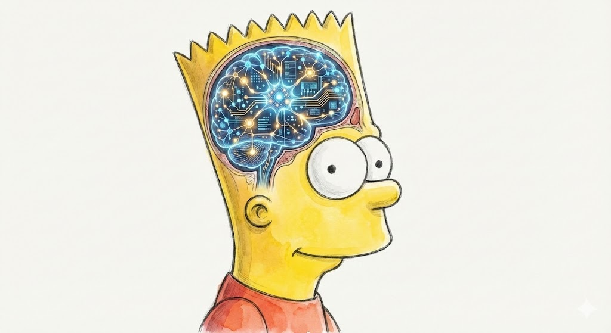
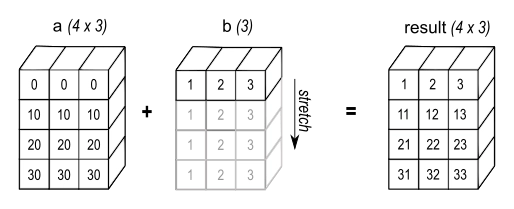

Building A Tensor micrograd

Andrej Karpathy's micrograd library (and his lecture on it) is arguably one of the best pieces of educational ML content out there. It's a tiny automatic differentiation (autodiff) engine built on Python floats, which you can use to build virtually any neural network.
In this short post, we'll build mgp, a NumPy-based autodiff engine. It will be similar to micrograd except it uses tensors instead of scalars, which is standard in packages like PyTorch. In the end, we'll build a convolutional neural network and reach an accuracy of 0.97+ on the MNIST test set.
We'll delve into the parts of mgp that go beyond micrograd: computing gradients for tensor variables and handling NumPy broadcasting in the backward pass. So you'll need some familiarity with backpropagation — if not, Andrej's lecture is the best place to start. All of the code can be found in the repo.
Tensors & Their Gradients
Since we rely on the NumPy library, we don't need to implement a tensor from scratch. NumPy's ndarray class is perfectly suitable, and its main operations, like matrix multiplication, can be wrapped easily. Below, we wrap our Tensor class around the NumPy array and define matrix multiplication (matmul) as the matmul of the underlying arrays.
import numpy as np
class Tensor:
def __init__(self, data, parents=()):
if not isinstance(data, np.ndarray):
data = np.array(data)
self.data = data
self.shape = data.shape
self.ndim = data.ndim
...
def __matmul__(self, other):
other = other if isinstance(other, Tensor) else Tensor(other)
output = Tensor(self.data @ other.data, parents=(self, other))
...
return outputNow remember we don't just need the tensor operations; we also need their gradients for the backward pass. Unlike the scalar engine, where every gradient is just a simple application of the chain rule to single numbers, tensor gradients involve linear algebra.
Let's look at matrix multiplication as an example. For $C = AB$, suppose we already have the incoming gradient $\frac{dL}{dC}$ from downstream. Then, we can compute the gradients of $A$ and $B$ as $\frac{dL}{dA}=\frac{dL}{dC} B^\top$ and $\frac{dL}{dB}=A^\top\frac{dL}{dC}$.
Proof (2D)
The key insight is that each element of $A$ contributes to an entire row of $C$, so we need to aggregate gradients across that row.
Consider the 2D case: $A$ is $m\times n$, $B$ is $n\times p$, and $C$ is $m\times p$. Each element of $C$ is a dot product:
$$C_{ij}=\sum_k A_{ik} B_{kj}$$Since $A_{ik}$ appears in every element of row $i$ of $C$, by the multivariate chain rule:
$$\frac{dL}{dA_{ik}} = \sum_j \frac{dL}{dC_{ij}} B_{kj} = \sum_j\left(\frac{dL}{dC}\right)_{ij}(B^\top)_{jk}=\left(\frac{dL}{dC} \, B^\top\right)_{ik}$$Thus, $\frac{dL}{dA}=\frac{dL}{dC}\, B^\top$. By the same reasoning, $\frac{dL}{dB}=A^\top \,\frac{dL}{dC}$.
Notice that this applies to 2D tensors, i.e. matrices. When dealing with additional dimensions ("batch dimensions"), we swap the last two using swapaxes(-2, -1). Because @ broadcasts over all axes except the last two, transposing only those axes is enough. .T would instead reverse all axes, which we don't need.
Now that we know how to compute gradients for the matmul, let's add gradient tracking and computation to our Tensor class.
class Tensor:
def __init__(self, data, parents=()):
if not isinstance(data, np.ndarray):
data = np.array(data)
self.data = data
self.shape = data.shape
self.ndim = data.ndim
# add gradient tracking
self.grad = np.zeros(self.shape, dtype=float)
self.grad_fn = lambda: None
self.parents = parents
def __matmul__(self, other):
other = other if isinstance(other, Tensor) else Tensor(other)
output = Tensor(self.data @ other.data, parents=(self, other))
# add gradient computation
def grad_fn():
self.grad += output.grad @ other.data.swapaxes(-2, -1)
other.grad += self.data.swapaxes(-2, -1) @ output.grad
output.grad_fn = grad_fn
return outputThe full implementation in the repo also handles 1D vector cases, but the core idea is the same. Of course, we also derive gradients for other operations like addition, element-wise multiplication, etc.
Broadcasting & Unbroadcasting
NumPy's broadcasting logic allows us to write a + b and get an answer even if a and b have different shapes. In the following figure (from NumPy's manual), a has shape (4,3) and b has shape (3,), but they add up to an array of shape (4,3).

NumPy broadcasts b across the first dimension, implicitly treating it as if it were repeated 4 times.
But what happens to the gradient of b?
The result Y has shape (4, 3), so the incoming gradient dL/dY also has shape (4, 3). By the chain rule, dL/db should equal dL/dY — but dL/dY has shape (4, 3) and b has shape (3,). The shapes don't match.
The fix: since broadcasting copied b across the batch dimension in the forward pass, we sum the gradient along that same dimension in the backward pass.
dL/db = sum over batch dimension of dL/dY # shape: (3,)Numerical Example
Suppose we're adding a bias $b$ with shape $(3,)$ to a batch of vectors $A$ with shape $(2, 3)$
$$A = \begin{bmatrix} 1 & 2 & 3 \\ 4 & 5 & 6 \end{bmatrix}, \quad b = \begin{bmatrix} 0.1 & 0.2 & 0.3 \end{bmatrix}$$ $$Y = A + b = \begin{bmatrix} 1.1 & 2.2 & 3.3 \\ 4.1 & 5.2 & 6.3 \end{bmatrix}$$Now suppose the incoming gradient from downstream is:
$$\frac{dL}{dY} = \begin{bmatrix} 0.5 & 1.0 & 0.2 \\ 0.3 & 0.8 & 0.4 \end{bmatrix} \quad \text{shape } (2, 3)$$For $A$, shapes already match, so $\frac{dL}{dA} = \frac{dL}{dY}$ directly — no unbroadcasting needed.
For $b$, broadcasting copied it across axis 0 in the forward pass. So in the backward pass, we sum out that axis:
$$\frac{dL}{db} = \begin{bmatrix} 0.5 + 0.3, & 1.0 + 0.8, & 0.2 + 0.4 \end{bmatrix} = \begin{bmatrix} 0.8 & 1.8 & 0.6 \end{bmatrix} \quad \text{shape } (3,) \checkmark$$This is exactly what unbroadcast(dL/dY, b.shape) computes. Intuitively, $b_0 = 0.1$ contributed to both $Y_{00}$ and $Y_{10}$, so its gradient is the sum of both paths: $0.5 + 0.3 = 0.8$.
In our example, broadcasting prepends a size-1 dimension and then stretches it. It can also stretch existing size-1 dimensions, allowing us to add shapes (4, 3) and (1, 3). In this case, we again sum the stretched dimension but keep it (with keepdims=True) to preserve the original rank. Both cases can also appear together.
Our unbroadcast function handles both cases sequentially.
grad is the incoming gradient that we need to unbroadcast, and shape is the shape of the variable we're computing the gradient for (e.g. b.shape in the example above).
def unbroadcast(grad, shape):
if grad.shape == shape:
return grad
ndim_grad = grad.ndim
ndim_shape = len(shape)
# 1. sum out extra leading dimensions
new_grad = grad.sum(axis=tuple(range(ndim_grad - ndim_shape)), keepdims=False)
# 2. sum out broadcasted dimensions (where shape has 1)
axes_to_sum = tuple((np.array(shape) != np.array(new_grad.shape)).nonzero()[0])
new_grad = new_grad.sum(axis=axes_to_sum, keepdims=True)
return new_gradIn our code, we add unbroadcast to every gradient computation where broadcasting might have occurred. It is needed in the addition operation because addition is broadcastable in NumPy.
class Tensor:
...
def __add__(self, other):
other = other if isinstance(other, Tensor) else Tensor(other)
output = Tensor(self.data + other.data, parents=(self, other))
def grad_fn():
# add unbroadcasting
self.grad += unbroadcast(output.grad, self.shape)
other.grad += unbroadcast(output.grad, other.shape)
output.grad_fn = grad_fn
return outputSee NumPy's manual for more details on broadcasting.
Backpropagation & Neural Networks
Now that we can compute tensor gradients properly, we can wire up the full backward pass. It is analogous to micrograd's (topological sort & propagate gradients in reverse), so I won't go into much detail here.
class Tensor:
...
def backward(self, grad=1):
nodes = []
visited = set()
def dfs(node):
if node not in visited:
visited.add(node)
for parent in node.parents:
dfs(parent)
nodes.append(node)
dfs(self)
self.grad = np.ones(self.shape) * grad
for node in reversed(nodes):
node.grad_fn()We also add a small PyTorch-style neural network API, including the convolutional layer nn.Conv2d. It uses the im2col approach; CS231n notes on convolutional layers is a great resource to read up on it. Briefly, im2col rearranges image patches into columns so that convolution becomes a single matmul, which we already know how to differentiate.
Having implemented the autodiff engine and the neural network library, we can train a convolutional neural network to classify MNIST images.
from mgp import nn
class CNN(nn.Module):
def __init__(self):
super().__init__()
self.conv1 = nn.Conv2d(1, 4, 3, stride=2, padding=1) # (N,1,28,28) -> (N,4,14,14)
self.conv2 = nn.Conv2d(4, 8, 3, stride=2, padding=1) # (N,4,14,14) -> (N,8,7,7)
self.fc = nn.Linear(8 * 7 * 7, 10)
self.relu = nn.ReLU()
def __call__(self, x):
x = self.relu(self.conv1(x))
x = self.relu(self.conv2(x))
x = x.reshape(x.data.shape[0], 8 * 7 * 7)
x = self.fc(x)
return xIn 10 epochs of training with a batch size of 32, a learning rate of 0.003 and the Adam optimizer with the betas at 0.9 and 0.999, this model reaches an accuracy of 0.9785 on the MNIST test set. Not bad at all for so little tuning!
End
Although mgp is still far from the functionality PyTorch offers, we've built a working library that can be used to train various neural networks. The main new ingredients are tensor-aware gradients and handling broadcasting in the backward pass. Next time, we'll extend it further and implement the vectorized operations like matmul by hand instead of relying on NumPy.